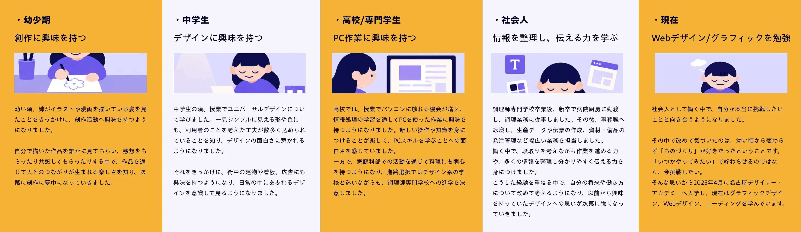
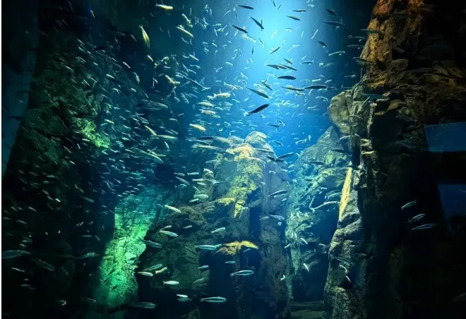
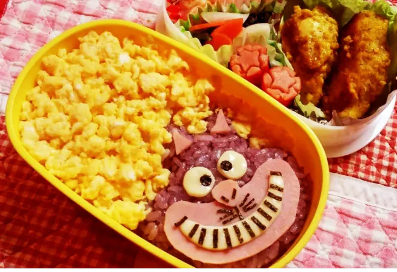
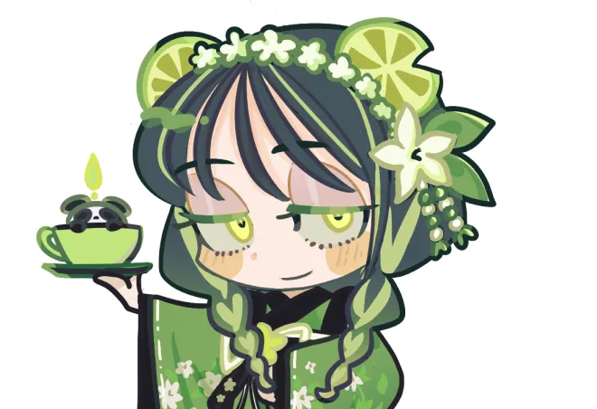
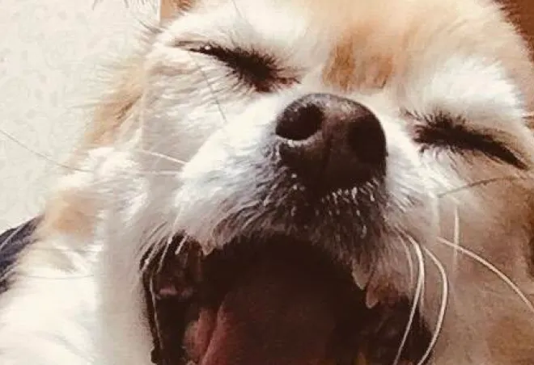

About me
加藤 風香
調理専門学校を卒業後、新卒で病院厨房に勤務し、調理業務に従事。
その後、事務職へ転職し、生産データや伝票の作成、資材・備品の発注管理など、幅広いサポート業務を担当しました。
現在はグラフィックデザイン、Webデザイン、コーディングを学んでいます。
これまでの経験で培った粘り強さと、行動力を活かし想像の景色を誰かの心に届く形へ変えられるデザイナーを目指しています。
STORY
-デザイナーを目指すまで-

Like
好きなもの・趣味

写真
水族館や風景の写真を撮ることが好きです。光や色の組み合わせ、構図の面白さに惹かれます。

キャラ弁
誰かに喜んでもらえるように考えながら作る時間が好きです。美味しさと楽しさを両立する工夫を大切にしています。

イラスト
幼い頃から続けている趣味です。頭の中にあるイメージを形にすることが好きです。
漫画
ダークファンタジーやホラーなどが好きで、独自の世界観に浸る時間を楽しんでいます。
映画
ホラーやミステリー映画をよく鑑賞しています。カメラワークの演出や構図、演技の表現に惹かれます。

犬
犬が大好きで、散歩中に見かけると思わず目で追ってしまいます。